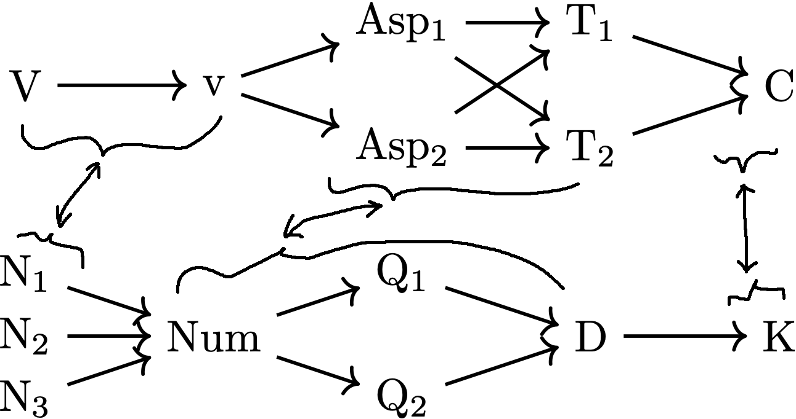
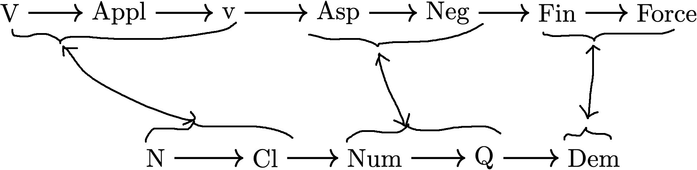

❶ General background
- Human language grammar works by types (e.g., noun, verb, tense).
- The grammatical type inventory, abstractly speaking, is a structured set.
- This set is structured at multiple levels of abstraction.
❷ Particular background
- At a certain level of abstraction, grammatical types are structured in posets (called "extended projections").
- Each extended projection is defined by a major part of speech, which encompasses types of the same part of speech (e.g., tense and aspect are both verbal types).
- There is an intuitive parallelism across extended projections (e.g., tenses anchor verbal events in time \(\approx\) demonstratives anchor nominal entities in space).
- Extended projections vary in size and content but the parallelism is always there.
- The parallelism is not strictly one-to-one but more exactly zone-to-zone.
- Two major ways to formulate the zones:
- \(\{\)core\(\}\) \(\rightarrow\) \(\{\)inflection\(\}\) \(\rightarrow\) \(\{\)discourse\(\}\)
- \(\{\)classification\(\}\) \(\rightarrow\) \(\{\)point-of-view\(\}\) \(\rightarrow\) \(\{\)anchoring\(\}\) \(\rightarrow\) \(\{\)linking\(\}\)
My abstract adopts the second but the results are not contingent on the formulation.
❸ Examples
A deliberately complex example:
Incomparable elements are subtle variants of the same type (aka "flavored").
A simpler example:
This language does not have grammaticalized tense but have classifiers.
An even simpler example:
These two extended projections have a very coarse granularity level (i.e., the linguist who uses them is glossing over a lot of details).
❹ Category theory
An extended projections can be viewed as a poset category.
- Objects: grammatical types
- Morphisms: instances of the partial order
Functors (i.e., monotone functions) can model cross-extended-projection connections.
Question: What is the parallelism in categorical terms?
❺ Category comparison
The parallelism reflects similarity between extended projections. Three levels of similarity between categories:
Isomorphism (strong)Equivalence (middle)- Adjoint situation (weak)
1 and 2 are ruled out
- extended projections have varied sizes
- poset categories are equiv iff they are iso
So the parallemism must be at best an adjoint situation if it can be categorically modeled.
❻ Mediated adjoint situation
Unfortunately no direct adjunction between extended projections is linguistically meaningful (see my dissertation for detail).
In general many valid mathematical configurations are linguistically counterintuitive (and hence inapplicable).
Solution: there is a linguistically meaningful adjunction between any extended projection poset (\(\mathbf{EP}_i\)) and the zone chain (\(\mathbf{EP}_0\)).
The left adjoint \(F_i\) sends grammatical types to their zones, and the right adjoint \(G_i\) sends each zone to a "representative" type.
This representative cannot be randomly chosen. The linguistically meaningful choice is the type at the zone's upper boundary.
...because the "meaning" of each zone is the completion of a subderivation (e.g., the inflectional part of a sentence).
❼ Freyd's adjoint functor theorem
Category theory imposes a constraint on the above-mentioned adjoint situation:
...because if they do there will be no more adjunction (and hence no more parallelism).
❽ Uniqueness of phase heads
If our category-theoretic modeling is on the right track, it has a nontrivial consequence for phase theory (a key component of current Chomsky-school generative syntax):
- Phases are relatively complete subderivations ready for phonological/semantic interpretation.
- Phase-demarcating types (aka "phase heads") are a subset of the zone upper boundary types.
In particular, this means that the popular "flavored little v heads" (e.g., vdo, vagent) are fundamentally flawed (v is a phase head).
Some linguists already argued against them (see my abstract for detail). Category theory provides a rigorous mathematical argument.